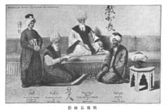
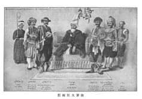

Resim: 25
Resmin üstünde sağda: 教部长, Şeyhülislam.
Resmin üstünde solda: 侍者, Hizmetçi veya koruma.
Resmin altında: okunamamaktadır. 白
Resmin en altında: 教不长拓影, Şeyhülislamın resmi.

Resim: 26
Resmin üstünde solda: 海部大臣, Deniz Kuvvetleri (Bahriye Nezareti) yüksek düzey memur.
Resmin altında: 海部大臣拓影, Deniz Kuvvetleri yüksek düzey memur resmi.